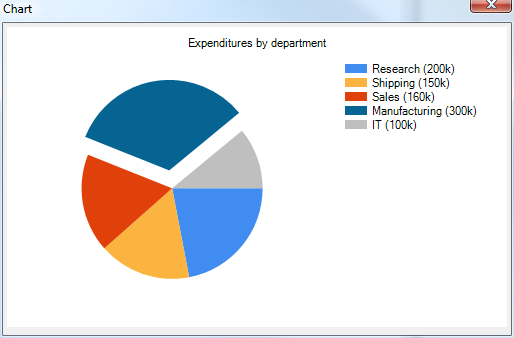

Using Charts in Xdialogs
To use a chart programmatically in an Xdialog:- Create the chart using the Chart API V11
- Save the chart as a bitmap
- Load the bitmap into memory
- Display the bitmap as an image in an Xdialog, and
- Clean up after yourself
Examples
See the V11 edition of the Learning Xdialog tutorial database. You can create or update it from the Sample and Tutorial Databases tab of the Select Database dialog, which is typically shown when you start Alpha Five.You can create a Code Library from Learning Xdialog using the Code Library top dropdown box. This is very convenient for reference when you are writing Xdialog code.
Find the What's New in V11 tree node in Learning Xdialog, open it, and then open the Charting sub-node. Under that you will find at least 6 samples. Pick the one you are interested in, click the Play Script button to see it work, and click the View Code button to see how it was coded.
The very simplest example follows.
' Initialize the chart definition
dim objSettings as Reporting::ReportChart
objSettings.chartType = "Pie"
dim uri as c = a5_chart_data_url_generate(objSettings,PieChart(),500,300)
' Build a bitmap image from the chart defintion
dim ac as Charting::Chart
ac.Populate(uri)
dim binImg as b = ac.SaveImageToBmp()
' Load bitmap into memory
ui_bitmap_load("TempChart",binImg)
' Display the bitmap
ui_dlg_box("Chart",<<%dlg%
{image_opaque=TempChart};
%dlg%)
' Remove the bitmap
ui_bitmap_drop("TempChart")
' Populate the data for a pie chart
function PieChart as Charting::ChartDataDefinition()
dim rdc as Charting::ChartDataDefinition
rdc.title = "Expenditures by department"
dim s as Charting::ChartSeriesDefinition
dim vt1 as Charting::ChartValueDefinition
vt1.value = 200000
vt1.label = "Research (200k)"
dim vt2 as Charting::ChartValueDefinition
vt2.value = 150000
vt2.label = "Shipping (150k)"
dim vt3 as Charting::ChartValueDefinition
vt3.value = 160000
vt3.label = "Sales (160k)"
dim vt4 as Charting::ChartValueDefinition
vt4.value = 300000
vt4.label = "Manufacturing (300k)"
vt4.exploded = .t. ' This pie slice needs to be 'exploded'
dim vt5 as Charting::ChartValueDefinition
vt5.value = 100000
vt5.label = "IT (100k)"
s.data.add(vt1)
s.data.add(vt2)
s.data.add(vt3)
s.data.add(vt4)
s.data.add(vt5)
rdc.series.add(s)
PieChart = rdc
end functionThis displays

See Also
Chart API V11Chart Control V11
Chart Component V11
Embedding Charts in Reports V11
Chart Alternate View V11
Using Charts on Forms V11